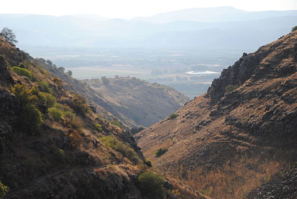
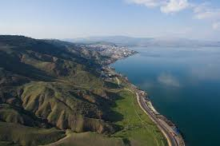
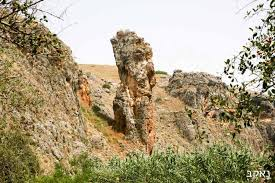
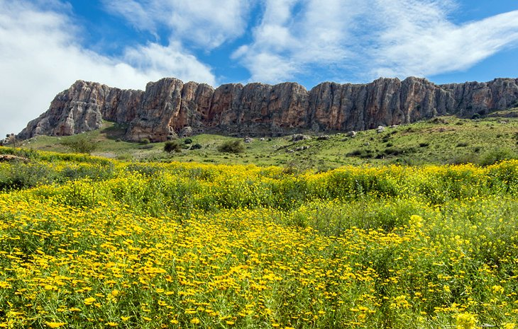
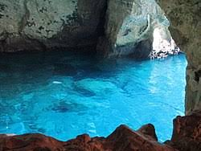
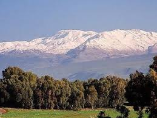

contact me
gallery
more info
well come to the center of israel!
what sord of information are you looking for?
reccomended trails in center
reccomended atractions
some tips of mine
in the center there are mainly cities, but if youll go hier to jerusalem or around you can find both cities and nature trails
golan-heights

western galilee hikes
galilee and the galilee sea

upper galilee

here are some reccomneded atraction in some of the areas
sea of galilee region

jerusalem atractions

at the winter you can find some snow

here some tip of mine for this area
"didnt find something fits"
by me
but, one of the many buties of israel is the veriety of nature, go and explore the green and some times also white of israel!
enjoy the visit!
contact me
github
facebook
instagram